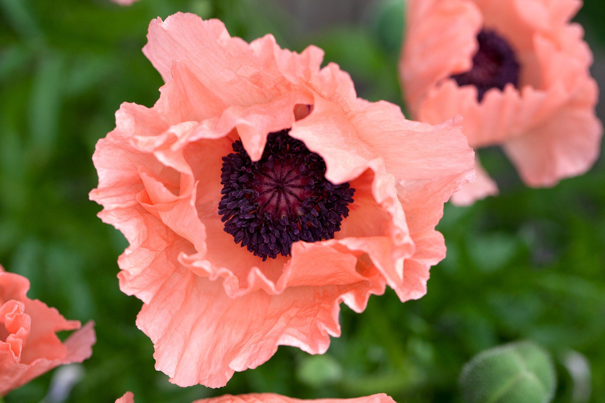
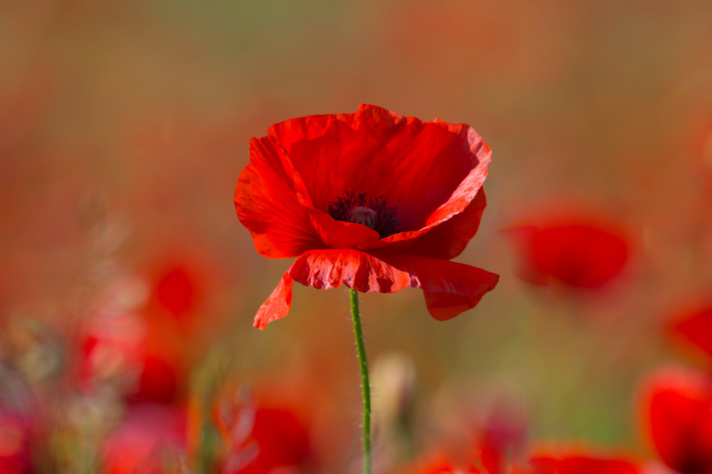

Poppies typically grow to be just over 3 feet tall and about 5 inches across. They usually have 4 to 6 petals form a considerable swirl within the flowers center.it is an annual plant (though in some species they are perennial) and the leaves are often white, pink, red, or even purple. The seeds are less than an inch in diameter and are kidney shaped. Their seeds are non-narcotic and can be used as food flavoring or processed into an oil. They’re a shade of blue and their aroma as well as taste can be described as' nutty'.
 | 
Since making the manner of legality clear here, we may continue. The best climate for the opium poppy would be low in humidity and warm, such as a desert. They only require a moderate amount of water to grow properly and are photo-responsive plants. This means they require long days and short nights in order to develop flowers.